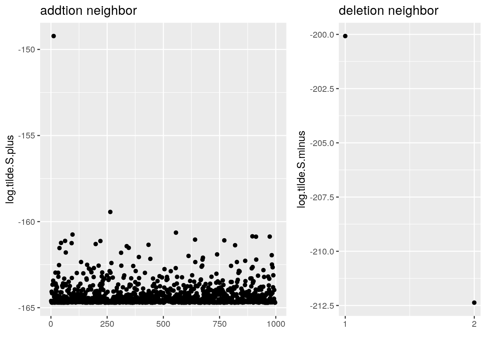

3 The proposed method applied in Bayesian logistic regression model
This is a supplymentary material in Chapter 4 about an R domo code for computing marginal likelihood function using proposed method and for-loop method.
3.1 Model setting
Suppose \({\bf y}\in\mathcal{R}^n\) are independent binary outcomes from Bernoulli distribution. \({\bf X}= ({\bf x}_1,{\bf x}_2,\ldots,{\bf x}_n)^{{ \mathrm{\scriptscriptstyle T} }}\in\mathcal{R}^{n\times p}\) is a covariate matirx. Given model \({\boldsymbol \gamma}\), the likelihood function of logistic regression model is \(f({\bf y}|{\boldsymbol \theta}_{\boldsymbol \gamma},{\boldsymbol \gamma}) = \prod_{i=1}^{n}p_i^{y_i}(1-p_i)^{(1-y_i)}\), where \(p_i = \frac{\exp({\bf x}_{i{\boldsymbol \gamma}}^{{ \mathrm{\scriptscriptstyle T} }}{\boldsymbol \theta}_{\boldsymbol \gamma})}{1+\exp({\bf x}_{i{\boldsymbol \gamma}}^{{ \mathrm{\scriptscriptstyle T} }}{\boldsymbol \theta}_{\boldsymbol \gamma})}\). Consider the prior distribution for \(\theta_{\boldsymbol \gamma}\) is \(\pi({\boldsymbol \theta}_{\boldsymbol \gamma}|{\boldsymbol \gamma}) \sim \mathcal{N}({\bf 0}, \lambda{\bf I}_{|{\boldsymbol \gamma}|})\) with the hyperparameter \(\lambda\). Then the marginal posterior function given \({\boldsymbol \gamma}\), \(\pi({\boldsymbol \theta}_{\boldsymbol \gamma}|{\bf y},{\boldsymbol \gamma})\), can be proportional to \[\begin{eqnarray} f({\bf y}|{\boldsymbol \theta}_{\boldsymbol \gamma},{\boldsymbol \gamma})\pi({\boldsymbol \theta}_{\boldsymbol \gamma}|{\boldsymbol \gamma}) = && \prod_{i=1}^n \left[\frac{\exp({\bf x}_{i{\boldsymbol \gamma}}^{{ \mathrm{\scriptscriptstyle T} }}{\boldsymbol \theta}_{{\boldsymbol \gamma}})}{1+\exp({\bf x}_{i{\boldsymbol \gamma}}^{{ \mathrm{\scriptscriptstyle T} }}{\boldsymbol \theta}_{{\boldsymbol \gamma}})}\right]^{y_i}\left[\frac{1}{1+\exp({\bf x}_{i{\boldsymbol \gamma}}^{{ \mathrm{\scriptscriptstyle T} }}{\boldsymbol \theta}_{{\boldsymbol \gamma}})}\right]^{1-y_i} \times \\ && (2\pi\lambda)^{-\frac{k}{2}}\exp\left\{-\frac{1}{2\lambda}{\boldsymbol \theta}_{\boldsymbol \gamma}^{{ \mathrm{\scriptscriptstyle T} }}{\boldsymbol \theta}_{\boldsymbol \gamma}\right\},\tag{3.1} \end{eqnarray}\] where \(k = |{\boldsymbol \gamma}|\) is the model size of \({\boldsymbol \gamma}\). Hence, the posterior mode is \(\hat{\boldsymbol \theta}_{\boldsymbol \gamma}= \arg\max_{{\boldsymbol \theta}_{\boldsymbol \gamma}}f({\bf y}|{\boldsymbol \theta}_{\boldsymbol \gamma},{\boldsymbol \gamma})\pi({\boldsymbol \theta}_{\boldsymbol \gamma}|{\boldsymbol \gamma})\).
In the R code, we set \(n = 300, p = 1000, \lambda =10000\). \({\bf x}_i\) is generated from \({\bf x}_i\overset{i.i.d}{\sim}\mathcal{N}({\bf 0}_p,0.2^{|i-j|})\). Consider the true model is \({\boldsymbol \gamma}^* = \{1,5,10,15\}\) with model size \(k=|{\boldsymbol \gamma}^*|=4\), and the true parameters is \({\boldsymbol \theta}_{{\boldsymbol \gamma}^{*}}^* = (1,1.5,2,-1)^{{ \mathrm{\scriptscriptstyle T} }}\). So \(y_i\overset{i.i.d}{\sim} Ber(p_i)\) with \(p_i = \frac{\exp({\bf x}_{i{\boldsymbol \gamma}^{*}}^{{ \mathrm{\scriptscriptstyle T} }}{\boldsymbol \theta}_{{\boldsymbol \gamma}^{*}}^{*})}{1+\exp({\bf x}_{i{\boldsymbol \gamma}^{*}}^{{ \mathrm{\scriptscriptstyle T} }}{\boldsymbol \theta}_{{\boldsymbol \gamma}^{*}}^{*})}, i=1,2,\ldots,n\). R code for data generation is as follow.
## Model setup
library(mvtnorm)
n=300 # sample size
p=1000 # dimension
lambda = 10000 # hyper-parameter in the prior
full.model <- 1:p
rho = 0.2 # correlation between each pair of adjacent covariates
# covariance matrix for covariate matrix: X.
Sig_x = rho^(abs(matrix(full.model,p,p)-t(matrix(full.model,p,p))))
set.seed(1000) # set random seed
var.true <- c(1,5,10,15) # true model r^*
k.true=length(var.true) # size of true model r^*
Theta = rep(0,p)
theta.true <- c(1,1.5,2,-1) # values of true theta_r values
Theta[var.true] = theta.true
X = rmvnorm(n,rep(0,p),Sig_x,method="chol") # generate X from multivar-normal distribution
X[,1]<-rep(1,n) # make first column of X a 1 vector
eta = X%*%Theta
pi.true <- 1/(1+exp(-eta)) # prob of y = 1.
y = rbinom(n,size = 1,prob = pi.true) # response is from Bernoulli distribution. 3.2 Evaluate \(\tilde S({\boldsymbol \gamma})\mathbb{I}\{{\boldsymbol \gamma}\in{\text{nbd}}_+(\hat{\boldsymbol \gamma})\}\) simultaneously
To estimate \(\tilde\theta_j\) for \(j\notin {\boldsymbol \gamma}\), we have the explicit forms of \(l(\theta_j)\), \(u_j(\theta_j)\) and each diagonal element of \({\bf J}_{\bf u}\) as follows: \[\begin{eqnarray} l(\theta_j) &=& \sum_{i=1}^{n} \big[y_i\psi_i(\theta_j)- \log(1+\exp(\psi_i(\theta_j)))\big]-\frac{1}{2\lambda}(\hat{\boldsymbol \theta}_{{\boldsymbol \gamma}}^{{ \mathrm{\scriptscriptstyle T} }}\hat{\boldsymbol \theta}_{{\boldsymbol \gamma}} + \theta_j^2) - \\ && \frac{k+1}{2}\log(2\pi\lambda), \tag{2.1} \\ u_j(\theta_j) &=& \sum_{i=1}^{n}x_{ij}\left(y_i - \frac{1}{1+\exp(-\psi_i(\theta_j))}\right) - \frac{\theta_j}{\lambda},\tag{2.2}\\ J_j(\theta_j) &=& \frac{\partial u_j(\theta_j)}{\partial \theta_j} = -\sum_{i=1}^{n} \frac{x_{ij}^2\exp(-\psi_i(\theta_j))}{\left[1+\exp(-\psi_i(\theta_j))\right]^2} - \frac{1}{\lambda},\tag{2.3} \end{eqnarray}\] where \(\psi_i(\theta_j) = x_{ij}\theta_j+{\bf x}_{i{\boldsymbol \gamma}}^{{ \mathrm{\scriptscriptstyle T} }}\hat{\boldsymbol \theta}_{{\boldsymbol \gamma}}\).
In order to estimate \(\tilde S({\boldsymbol \gamma})\mathbb{I}\{{\boldsymbol \gamma}\in{\text{nbd}}_+(\hat{\boldsymbol \gamma})\}\),
- Secondly, plugging each \(u_j(\theta_j)\) and \(J_j(\theta_j)\) into (3.2) in the Newton-Raphson algorithm, \[\begin{eqnarray} {\boldsymbol \theta}^{(t+1)} = {\boldsymbol \theta}^{(t)} - {\bf J}_{\bf u}({\boldsymbol \theta}^{(t)})^{-1}{\bf u}({\boldsymbol \theta}^{(t)}),\tag{3.2} \end{eqnarray}\] we can obtain \(\tilde{\boldsymbol \Theta}_ {{\text{nbd}}_+(\hat{\boldsymbol \gamma})}\) simultaneously;
- Finally, applying each element in \(\tilde{\boldsymbol \Theta}_ {{\text{nbd}}_+(\hat{\boldsymbol \gamma})}\) to (3.3), \[\begin{eqnarray} S(\hat{\boldsymbol \gamma}^{+j})&=& (2\pi n^{-1})^{|\hat{\boldsymbol \gamma}^{+j}|/2}f({\bf y}|\hat{\boldsymbol \theta}_{\hat{\boldsymbol \gamma}^{+j}},\hat{\boldsymbol \gamma}^{+j})\pi(\hat{\boldsymbol \theta}_{\hat{\boldsymbol \gamma}^{+j}}|\hat{\boldsymbol \gamma}^{+j})\pi(\hat{\boldsymbol \gamma}^{+j})\nonumber\\ &\geq& (2\pi n^{-1})^{\frac{|\hat{\boldsymbol \gamma}|+1}{2}}f({\bf y}|\hat{\boldsymbol \theta}_{\hat{\boldsymbol \gamma}},\tilde\theta_j,\hat{\boldsymbol \gamma}^{+j})\pi(\hat{\boldsymbol \theta}_{\hat{\boldsymbol \gamma}},\tilde\theta_j|\hat{\boldsymbol \gamma}^{+j})\pi(\hat{\boldsymbol \gamma}^{+j})\tag{3.3} \\ &\equiv& \tilde S(\hat{\boldsymbol \gamma}^{+j}),\nonumber \end{eqnarray}\] we obtain \(\tilde S({\boldsymbol \gamma})\mathbb{I}\{{\boldsymbol \gamma}\in{\text{nbd}}_+(\hat{\boldsymbol \gamma})\}\).
In our R demo code, to make the coding easier, instead of iterating (3.2), we consider a useful function multiroot from the R package rootSolve (Soetaert 2009) to solve the system of equations: all \(u_j(\theta_j) = 0\). Assuming a full Jacobian matrix (\({\bf J}_{\bf u}\)), rootSolve also uses the Newton-Raphson method to estimate solutions to the system of equations. In our case, given a vector of \((p-k)\) parameters \(\theta_j\)’s, and a set of \((p-k)\) equations regarding these parameters, multiroot estimates the root of the equations, i.e. the \(\theta_j\) values where all \(u_j(\theta_j) = 0\).
To make the code more understable, we list some reference of algebra notations for R code.
- 1
log.likelihd.der. It returns a \((p-k)\)-dimension vector for \(u_j(\theta_j)\) in (2.2).- 1.1
psiis \({\bf X}_{-{\boldsymbol \gamma}}{\boldsymbol \theta}_{-{\boldsymbol \gamma}} + {\bf X}_{\boldsymbol \gamma}\hat{\boldsymbol \theta}_{\boldsymbol \gamma}{\boldsymbol 1}_{p-k}\), a \(n\times (p-k)\) matrix consisting of \(\psi_i(\theta_j)\) for all \(j\notin{\boldsymbol \gamma}\), wherex.hat.thetais \({\bf X}_{\boldsymbol \gamma}\hat{\boldsymbol \theta}_{\boldsymbol \gamma}{\boldsymbol 1}_{p-k}\), a \(n\times (p-k)\) matrix consisting of \((p-k)\) many \({\bf X}_{\boldsymbol \gamma}\hat{\boldsymbol \theta}_{\boldsymbol \gamma}\)’s: \(({\bf X}_{\boldsymbol \gamma}{\boldsymbol \theta}_{\boldsymbol \gamma},{\bf X}_{\boldsymbol \gamma}{\boldsymbol \theta}_{\boldsymbol \gamma},\ldots,{\bf X}_{\boldsymbol \gamma}{\boldsymbol \theta}_{\boldsymbol \gamma})\), andX_r: \({\bf X}_{-{\boldsymbol \gamma}}\) contains predictors not in the current model, a \(n\times (p-k)\) matrix consisting of \(\tilde{\bf x}_{j}\) for all \(j\notin{\boldsymbol \gamma}\).
- 1.2
pi_ris \(p_i\) given the current model \({\boldsymbol \gamma}\).
- 1.1
- 2
log.tilde.S.plusis \(\tilde S({\boldsymbol \gamma})\mathbb{I}\{{\boldsymbol \gamma}\in{\text{nbd}}_+(\hat{\boldsymbol \gamma})\}\). - 3
neg.log.exact.likelihdis \(-\log\left[f({\bf y}|{\boldsymbol \theta}_{\boldsymbol \gamma},{\boldsymbol \gamma})\pi({\boldsymbol \theta}_{\boldsymbol \gamma}|{\boldsymbol \gamma})\pi({\boldsymbol \gamma})\right]\) in (3.1).
The following R code defines the functions of negative (3.1), (2.2) and (3.3).
# Functions
gamma_y1 <- which(y==1) # position of y=1
gamma_y0 <- (1:n)[-gamma_y1] # position of y=0
# log.likelihd.der is the first derivative of log-likelihood function of
# l(theta_j): u_j(theta_j) in Eq.(1.3). The input "theta" is vectorized.
# psi is a vector consisting of psi_i(theta_j)'s for all j's.
log.likelihd.der <- function(theta) {
psi <- x.hat.theta + X_r * rep(theta, rep(n,hat.G0.t.len))
pi_r <- 1/(1+exp(-psi))
f <- colSums(X_r[gamma_y1,]*(1-pi_r[gamma_y1,])) -
colSums(X_r[gamma_y0,]*pi_r[gamma_y0,]) - theta/lambda
return(f)
}
# log of approximate marginal posterior likelihood function
# for nbd+:log(\tilde S(r)) in Eq.(1.6)
log.tilde.S.plus <- function(theta) {
psi <- x.hat.theta + X_r * rep(theta, rep(n,hat.G0.t.len))
f = colSums(psi[gamma_y1,])- colSums(log(1+exp(psi))) -
0.5/lambda*(rep(crossprod(hat.theta.t),p-k) + theta^2) - (k+1)/2*log(n*lambda)
- lchoose(p, k+1)
return(f)
}
# log of exact marginal posterior likelihood function: -Eq.(1.1)
neg.log.exact.likelihd <- function(theta) {
X.r = x0
len.theta <- length(theta)
XTheta.r <- X.r%*%as.matrix(theta) # n times 1 vector
f = sum(y*XTheta.r - log(1+exp(XTheta.r)))- len.theta/2*log(2*pi*lambda) -
crossprod(theta)/(2*lambda) - lchoose(p, len.theta)
return(-f)
}Given the current model \({\boldsymbol \gamma}= \{1,5,10\}\), we compute \(\tilde S({\boldsymbol \gamma})\mathbb{I}\{{\boldsymbol \gamma}\in{\text{nbd}}_+(\hat{\boldsymbol \gamma})\}\) and \(\tilde S({\boldsymbol \gamma})\mathbb{I}\{{\boldsymbol \gamma}\in{\text{nbd}}_-(\hat{\boldsymbol \gamma})\}\) simultaneously.
library(rootSolve) # for multiroot function
library(ggplot2)
library(ggpubr)
# Assume the current model is the (1,5,10)
hat.G1 <- c(1,5,10) # first predictor
hat.G1.t <- hat.G1
hat.G0.t <- full.model[-hat.G1.t] # comlement set of the current model.
X.r <- X[, hat.G1.t] # predictors in the current model
X_r <- X[, hat.G0.t] # predictors not in the current model.
k = length(hat.G1.t) # num of predictors in current model
x0 <- X.r
# estimate posterior model \hat\theta_r for current model
likelihd.optim <- optim(par = rep(0,length(hat.G1.t)), fn = neg.log.exact.likelihd,
method = 'BFGS')
log.S <- -likelihd.optim$value
hat.theta.t <- likelihd.optim$par
## 2.ii)
# Define nbd+(r): addition neighbor
add.nei <- lapply(hat.G0.t, FUN = function(x) sort(c(hat.G1.t, x)))
### Define nbd-(r): deletion neighbor
if (k>1) {
del.nei <- lapply(2:k, FUN = function(x) hat.G1.t[-x]) # reserve first predictor always
} else {
del.nei <- NULL # if k=1, there is no deletion neighbor.
}
## 2.iii) & iv)
### \tilde s(r) in nbd_+(r): addition neighbor
hat.G0.t.len <- length(hat.G0.t) # num of elements in complement set of current model
x.hat.theta <- matrix(X.r%*%as.matrix(hat.theta.t),n,hat.G0.t.len)
# solutions to system of equations.
tilde.theta.plus <- multiroot(f = log.likelihd.der, start = rep(0,hat.G0.t.len),
jactype = 'bandint', bandup = 0, banddown = 0)$root
appro.post.plus <- log.tilde.S.plus(tilde.theta.plus) # Eq.(1.6)
### \tilde s(r) in nbd-(r): deletion neighbor of current model.
if (k>1) {
appro.post.minus <- rep(NA,k-1)
for (j in 2:k) {# begins from 2 to avoid removal of the intercept
x0 = X[,hat.G1.t[-j]]
appro.post.minus[j-1] <- -neg.log.exact.likelihd(hat.theta.t[-j])
}
} else appro.post.minus = NULL # if k=1, no deletion neighbor.
appro.post.plus.data.frame = data.frame(S.plus = appro.post.plus,x = 1:(p-k))
appro.post.minus.data.frame = data.frame(S.minus = appro.post.minus,x = 1:(k-1))
p.plus <- ggplot(appro.post.plus.data.frame, aes(x,S.plus)) + geom_point() +
xlab("") + ylab("log.tilde.S.plus") + ggtitle("addtion neighbor")
p.minus <- ggplot(appro.post.minus.data.frame, aes(x,S.minus)) + geom_point() +
scale_x_continuous(breaks = seq(1, k, by = 1)) +
xlab("") + ylab("log.tilde.S.minus") + ggtitle("deletion neighbor")
ggarrange(p.plus, p.minus, widths = c(3,2))
# return the best model in the nbd_+(r) nbd_-(r)
hat.r.plus <- add.nei[[which.max(appro.post.plus)]]
hat.r.minus <- del.nei[[which.max(appro.post.minus)]]
hat.r.plus## [1] 1 5 10 15## [1] 1 10Thus, \(\hat{\boldsymbol \gamma}^+=\)(1, 5, 10, 15) and \(\hat{\boldsymbol \gamma}^-=\)(1, 10). Recall that the ture model \({\boldsymbol \gamma}^*=\{1,5,10,15\}\). Given the current model \({\boldsymbol \gamma}=\{1,5,10\}\), the next update is \(\hat{\boldsymbol \gamma}^+=\)(1, 5, 10, 15) in addition neighbor, and \(\hat{\boldsymbol \gamma}^-=\)(1, 10) in deletion neighbor.
3.3 Time cost comparison for proposed method and for loop method
In this part, we compare time cost of \(\tilde S({\boldsymbol \gamma})\mathbb{I}\{{\boldsymbol \gamma}\in{\text{nbd}}_+(\hat{\boldsymbol \gamma})\}\) estimated by proposed method with \(S({\boldsymbol \gamma})\mathbb{I}\{{\boldsymbol \gamma}\in{\text{nbd}}_+(\hat{\boldsymbol \gamma})\}\) using “for-loop”.
library(microbenchmark)
LOG.exact.likelihd <- rep(NA,length(add.nei))
j = 1
timecost <- microbenchmark("for_loop" = {
for (model in add.nei) {
x0 <- X[,model]
# compute posterior mode
likelihd.optim <- optim(par = rep(0,length(model)), fn = neg.log.exact.likelihd,
method = 'BFGS')
LOG.exact.likelihd[j] <- - likelihd.optim$value
j = j + 1
}
},
"Proposed" = {
tilde.theta.plus <- multiroot(f = log.likelihd.der, start = rep(0,hat.G0.t.len),
jactype = 'bandint', bandup = 0, banddown = 0)$root
}
)
timecost## Unit: milliseconds
## expr min lq mean median uq max neval
## for_loop 2461.7136 2487.5853 2589.733 2546.5324 2630.0903 3742.5109 100
## Proposed 105.9704 116.1467 129.714 124.5397 134.2909 235.5217 100In terms of median, the proposed method is about 20 times faster than the “for-loop”.
Soetaert, Karline. 2009. RootSolve: Nonlinear Root Finding, Equilibrium and Steady-State Analysis of Ordinary Differential Equations.
References
Soetaert, Karline. 2009. RootSolve: Nonlinear Root Finding, Equilibrium and Steady-State Analysis of Ordinary Differential Equations.